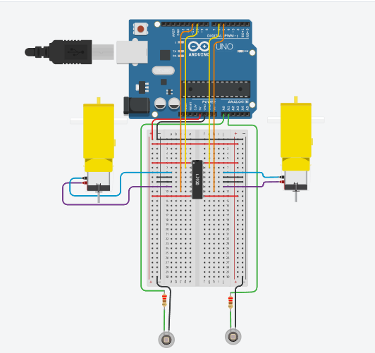

Módulo 1 — Fundamentos Cinemáticos, Actuadores y Percepción Óptica
Semanas 1 y 2
Diseñar arquitecturas de hardware orientadas a procesamiento en tiempo real (RTOS/Bare-metal), gestión de periféricos (Timers, ADC, PWM) y manejo de interrupciones.
Comprender la cinemática de tracción diferencial, restricciones no holonómicas y el modelado electromecánico de actuadores DC.
El seguidor de línea es el paradigma base de los AGV (Automated Guided Vehicles) desplegados en la Industria 4.0 para intralogística (Ej. Amazon Robotics, KUKA Mobile Robotics).
Un AGV requiere una estrecha integración entre dominios físicos y lógicos. El sistema opera en lazo cerrado: los sensores observan el resultado de las acciones del motor y corrigen continuamente la trayectoria.
Etapa analógica que adapta la señal cruda del sensor antes de entregarla al ADC: amplifica la señal débil, elimina ruido de alta frecuencia con un filtro RC pasabajos, y ajusta el nivel de voltaje al rango 0–5V del MCU.
La plataforma utiliza Tracción Diferencial. El movimiento global depende de la diferencia de velocidades angulares entre la rueda izquierda (\(\omega_L\)) y la rueda derecha (\(\omega_R\)).
Una rueda de radio \(R\) que gira a \(\omega\) rad/s avanza \(V = \omega \cdot R\) m/s sobre el suelo. Esta relación fundamental convierte la velocidad angular del motor en velocidad lineal de la rueda.
La cinemática directa calcula el estado global del robot \([V, \Omega]^T\) — cuán rápido avanza y gira — a partir de la velocidad individual de cada rueda:
El robot no puede moverse lateralmente de forma instantánea (no puede "cruzar"). Esto impone \(V_y = 0\) en su marco local: toda corrección de trayectoria debe hacerse girando, no deslizando.
Cuando las ruedas giran a diferente velocidad, el robot describe un arco. El ICC es el punto fijo del suelo alrededor del cual gira el chasis en ese instante. Entre más cerca esté el ICC del robot, más cerrada es la curva.
El modelado electromecánico del motor de corriente continua (DC) es fundamental para entender la dinámica del sistema.
Aplicando la Ley de Kirchhoff de Voltajes (KVL) al circuito de armadura: el voltaje aplicado debe igualar la suma de todas las caídas de voltaje internas.
La Back-EMF (\(E_a = K_e \cdot \omega_m\)) es el voltaje que el motor genera al girar, oponiéndose al voltaje de entrada. A mayor velocidad, mayor Back-EMF, menor corriente.
Debido a la inductancia \(L_a\), la corriente no puede cambiar instantáneamente. Esto define la frecuencia mínima requerida para la señal PWM; si la frecuencia es muy baja, la corriente tendrá un "rizado" excesivo, causando pérdida de eficiencia y sobrecalentamiento.
Un motor DC estándar gira a altas RPM (>5000 RPM) pero entrega un torque nominal muy bajo (\(\approx mN\cdot m\)).
Sistema de engranajes que reduce velocidad y amplifica torque. Donde \(N\) es la relación de reducción (ej. N=48 significa que el eje de salida gira 48 veces más lento) y \(\eta\) es la eficiencia mecánica del tren de engranajes (típicamente 0.7–0.9):
\(\omega_{out} = \frac{\omega_m}{N}\) | \(\tau_{out} = \tau_m \cdot N \cdot \eta\)
Ratio común en robótica móvil: 1:48 a 1:120.
Buscamos motores N20 (Micro Metal Gearmotors) o motores amarillos TT con caja reductora, capaces de otorgar al menos 1.5 Kg·cm de torque para vencer la inercia estática del chasis.
El MCU entrega señales lógicas de baja potencia. El motor requiere alta corriente. El Puente H actúa como interfaz de potencia entre ambos dominios.
Consta de 4 interruptores (Q1–Q4) dispuestos en forma de "H". El motor queda en el puente central. Cerrar pares diagonales invierte la polaridad del voltaje en el motor.
Si Q1 y Q2 se cierran al mismo tiempo, causan un cortocircuito directo entre VCC y GND, destruyendo el puente H. Los drivers modernos integran "Dead-time insertion" por hardware para evitarlo.
La lógica de control direccional depende de los pines IN1 e IN2 (Motor A) o IN3 e IN4 (Motor B), junto con el pin ENA/ENB para la modulación PWM.
| ENA (PWM) | IN1 | IN2 | Estado del Motor A |
|---|---|---|---|
| Alto (1) | Alto (1) | Bajo (0) | Giro Adelante (Forward) |
| Alto (1) | Bajo (0) | Alto (1) | Giro Atrás (Reverse) |
| Alto (1) | Alto (1) | Alto (1) | Freno Dinámico (Fast Stop) |
| Alto (1) | Bajo (0) | Bajo (0) | Parada Libre (Free Running) |
| Bajo (0) | X | X | Apagado (Sin torque) |
Se repite para el Motor B (ENB, IN3, IN4).

Abstracción mediante funciones para el control del motor:
// Definición de pines (Motor Izquierdo)
const int ENA = 9; // Velocidad (PWM)
const int IN1 = 8; // Dirección 1
const int IN2 = 7; // Dirección 2
void setup() {
pinMode(ENA, OUTPUT);
pinMode(IN1, OUTPUT);
pinMode(IN2, OUTPUT);
}
void moverAdelante(int velocidad) {
digitalWrite(IN1, HIGH);
digitalWrite(IN2, LOW);
analogWrite(ENA, velocidad); // velocidad: 0 a 255
}
Pulse Width Modulation. Es una técnica para emular señales analógicas de potencia controlando el tiempo que una señal digital pasa en estado ALTO frente al estado BAJO.
La frecuencia \(f_{pwm}\) debe ser suficientemente alta para que el motor "filtre" los pulsos mediante su inercia mecánica y su inductancia eléctrica.
\(f_{pwm} \gg \frac{1}{\tau_e}\) donde \(\tau_e = \frac{L_a}{R_a}\). Típicamente se usa 10kHz - 20kHz para que el "pitido" quede fuera del rango audible humano.
En procesadores AVR (como el ATmega328P de Arduino), el PWM no se hace bloqueando el código con delay(), sino mediante periféricos de hardware dedicados llamados Timers.
El Timer cuenta pulsos del reloj del MCU (16 MHz). El pre-escalar divide esa frecuencia antes de contar (÷1, ÷8, ÷64…). Un pre-escalar menor = contador más rápido = PWM de mayor frecuencia. Se configura en el registro TCCR1B.
Con pre-escalar por defecto, Timer1 genera PWM a ~490 Hz — inaudible para humanos es >20 kHz. El motor "silba" a 490 Hz. Cambiar el pre-escalar a ÷1 eleva la frecuencia a ~31 kHz, eliminando el ruido audible.
En ingeniería mecatrónica, el Rapid Prototyping exige validar la lógica de adquisición y control antes de ensamblar el PCB o rutear hardware físico. Usaremos Tinkercad para validar la lógica del ADC y la generación de PWM en lazo abierto.
Tinkercad nos proporciona osciloscopios virtuales, multímetros y visualización de código C/C++ embebido.
Representación lógica de las conexiones (Netlists). Es el verdadero plano de ingeniería. No nos importa cómo se ven los cables físicos, sino las rutas lógicas y planos de masa (GND plane).
Representación física para pruebas temporales. Suceptible a inductancias parásitas, capacitancias parásitas y ruidos por conexiones mecánicas débiles. (Limitado a señales de baja frecuencia).
Los sistemas móviles son autónomos, dependiendo enteramente de su fuente de energía on-board.
Tienen una alta densidad de energía y una excelente capacidad de descarga instantánea (C-Rating). Una celda (1S) tiene un voltaje nominal de 3.7V.
Usaremos configuraciones 2S (7.4V) o 3S (11.1V) para alimentar motores y reguladores buck/LDO lógicos.
Ejemplo: Una batería de 1000 mAh con 25C puede entregar picos de 25 Amperios.
Las LiPo carecen de efecto memoria, pero son térmicamente inestables. Si se perforan o si el voltaje por celda baja de 3.0V, se degradan permanentemente e incluso pueden entrar en fuga térmica (incendio). Obligatorio el uso de voltímetros/chicharras de monitoreo.
Los motores DC generan ruido electromagnético severo (EMI) por la conmutación de las escobillas. Este ruido viaja por la línea de tierra (GND) y puede reiniciar el microcontrolador (Brown-out Reset).
La interacción de la luz electromagnética con las superficies sigue principios físicos que debemos explotar.
Utilizamos longitudes de onda cercanas a los 940 nm (Near-IR). La ventaja de usar IR en lugar de luz visible es que los sensores pueden incluir filtros ópticos (encapsulados de resina negra) que bloquean la luz ambiental diurna o fluorescente (ruido), maximizando la relación señal-ruido (SNR).
Material que refleja la mayor parte de la energía fotónica IR incidente, dispersándola (Reflexión difusa gobernada por la Ley de Lambert). El sensor recibe un flujo radiante alto.
Absorbe los fotones infrarrojos transformando su energía en calor minúsculo. El flujo radiante reflejado tiende a cero. Atención: cintas brillantes (reflexión especular) pueden engañar al sensor.
El TCRT5000 integra dos componentes: un LED infrarrojo emisor y un fototransistor receptor. Ambos apuntan hacia el suelo. La luz reflejada controla la corriente del transistor, generando un voltaje proporcional a la reflectancia.
Este comportamiento es inversamente proporcional a la reflectancia. Requiere una correcta parametrización de \(R_{pull-up}\) (usualmente 10kΩ) para que el voltaje oscile en el rango completo del ADC (rango dinámico).
La curva de transferencia óptica del TCRT5000 no es lineal. Existe un "punto dulce" donde la corriente de colector alcanza su máximo local respecto a la distancia al objeto físico.
La hoja de datos especifica que el pico de detección óptica ocurre entre los 2.5 mm y 3 mm de separación entre la lente del sensor y el suelo. En ensamblajes mecánicos, una altura > 10 mm reduce drásticamente la resolución del sistema.
La señal \(V_{out}\) del sensor es continua en tiempo y amplitud. El MCU es discreto, por lo que necesita convertirla a un número entero. El ADC interno del ATmega328P usa el método de Aproximaciones Sucesivas (SAR): prueba bit a bit desde el más significativo, comparando con la señal real, hasta construir el número de 10 bits en ~100 µs.
El proceso de discretización introduce un error inherente, agravado por el ruido térmico del sensor y las vibraciones mecánicas del robot.
Filtros pasivos RC pasabajos pueden eliminar ruido de alta frecuencia del fototransistor antes de entrar al pin ADC.
Promediado Móvil (Moving Average). Tomar \(N\) muestras y promediarlas para limpiar la señal, a costa de introducir latencia (retardo en fase).
Un sensor frente a la línea negra puede leer 850 (sobre 1023) en un cuarto oscuro, pero leer 600 si la ventana está abierta. Esto destruye un algoritmo basado en "umbrales fijos".
Durante el `setup()`, el robot hace un barrido físico (rotación) sobre la línea para capturar empíricamente los valores extremos:
Conociendo los mínimos y máximos reales, mapeamos matemáticamente la lectura cruda a un porcentaje estandarizado (0 a 1000).
Esto garantiza que, sin importar las condiciones de iluminación externa, 1000 siempre significa "Totalmente en línea" y 0 significa "Totalmente fuera".
Un seguidor de línea de alta velocidad no usa 1 o 2 sensores. Usa arreglos lineales (regletas) de 8 a 16 sensores (Ej. QTR-8A de Pololu).
La línea negra se encuentra actualmente bajo los sensores S3 y S4.
El objetivo fundamental de la percepción óptica no es saber "qué sensores tocan la línea", sino estimar el Centroide de la Línea como una variable continua, esencial para un Control PID.
Asignamos un "peso" o factor geométrico a cada sensor según su posición física (\(w_i\)). Multiplicamos ese peso por el valor normalizado del sensor (\(s_i\)).
Donde los pesos \(w_i\) típicamente son múltiplos (0, 1000, 2000, 3000... 7000 para un arreglo de 8 sensores).
El error se define como la desviación instantánea entre el punto deseado y la posición actual.
Dado que no existe una regleta QTR-8A en Tinkercad, el estudiante modelará el canal analógico sustituyendo el fototransistor por una red LDR (Divisor de Tensión).
Se requerirá estructurar una máquina de estados finita (FSM) que permita:
Inicialización de estructuras de datos para el arreglo de sensores:
#define NUM_SENSORES 8
int pines_sensores[NUM_SENSORES] = {A0, A1, A2, A3, A4, A5, A6, A7};
int s_min[NUM_SENSORES];
int s_max[NUM_SENSORES];
int s_norm[NUM_SENSORES];
void inicializar_calibracion() {
for(int i=0; i < NUM_SENSORES; i++) {
s_min[i] = 1023; // Inicializar inverso para encontrar minimos
s_max[i] = 0; // Inicializar inverso para encontrar maximos
}
}
Detección en tiempo real de picos máximos y valles mínimos por sensor:
void ejecutar_calibracion(int lectura_actual, int indice_sensor) {
// Detector de picos máximos
if (lectura_actual > s_max[indice_sensor]) {
s_max[indice_sensor] = lectura_actual;
}
// Detector de valles mínimos
if (lectura_actual < s_min[indice_sensor]) {
s_min[indice_sensor] = lectura_actual;
}
}
Implementación del algoritmo de centroide con tipos de dato correctos:
float calcular_posicion() {
long suma_ponderada = 0;
long suma_normalizada = 0;
for(int i=0; i < NUM_SENSORES; i++) {
// Normalización: (valor - min) * 1000 / (max - min)
s_norm[i] = map(analogRead(pines_sensores[i]),
s_min[i], s_max[i], 0, 1000);
suma_ponderada += (long)s_norm[i] * (i * 1000);
suma_normalizada += s_norm[i];
}
if(suma_normalizada == 0) return ultimo_valor_conocido;
return (float)suma_ponderada / suma_normalizada;
}
En el código anterior, nótese el uso del modificador `(long)`. En procesadores AVR de 8 bits (como Arduino UNO), un variable estándar `int` solo almacena hasta 32,767. La multiplicación matemática de \(1000 \times 7000\) provocará un desbordamiento (Overflow), corrompiendo totalmente el cálculo lógico. Deben dominarse los tipos de datos a bajo nivel.
El modelo matemático asume que siempre hay línea visible. ¿Qué ocurre ante discontinuidades?
1. Simulación Lógica (Tinkercad): Construcción de una subrutina de lectura analógica para 3 sensores, incluyendo algoritmo de normalización y volcado de datos por Interfaz Serial USART con filtro promedio móvil (N=5).
2. Hardware Físico: Presentar ensamblaje CAD/físico del tren motriz, verificando la relación del centro de masa con el eje geométrico del ICC para maximizar tracción transversal.
El error \(e(t)\) calculado en esta semana alimentará un controlador PID que genera la señal de corrección \(u(t)\) — la diferencia de velocidad entre ruedas para retomar la línea.
\(u(t)\): señal de corrección (diferencia de velocidad entre ruedas) | \(K_p\): ganancia proporcional | \(K_i\): ganancia integral | \(K_d\): ganancia derivativa | \(\tau\): variable de integración (tiempo pasado). Sintonizaremos \(K_p, K_i, K_d\) con Ziegler-Nichols Modificado.